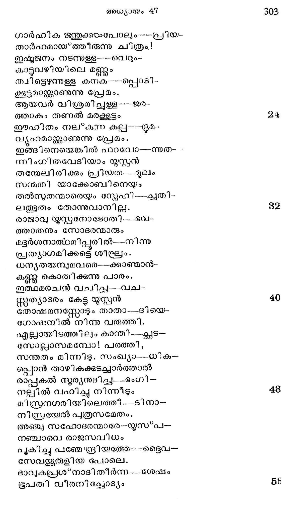
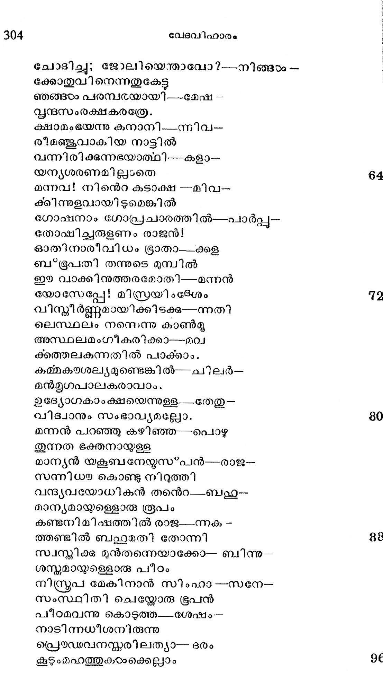
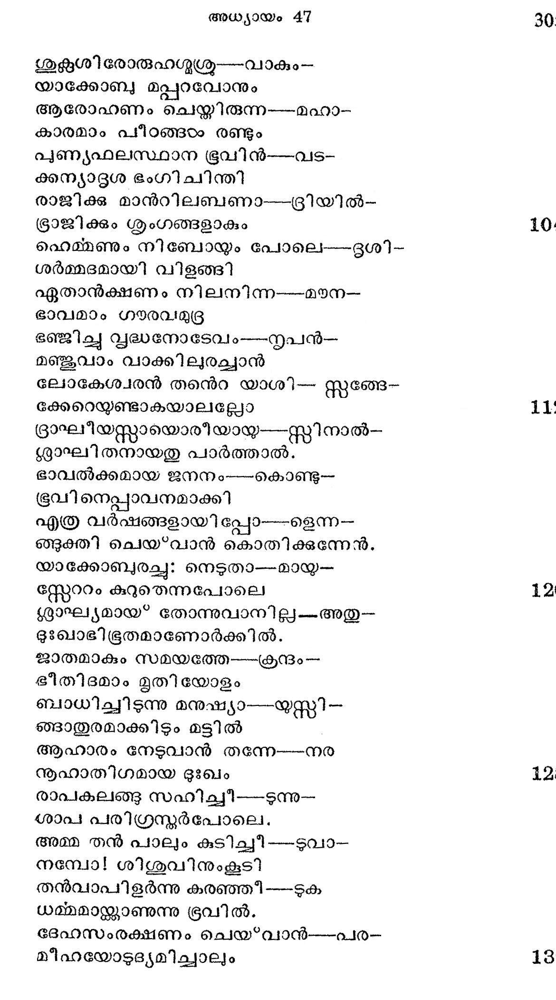
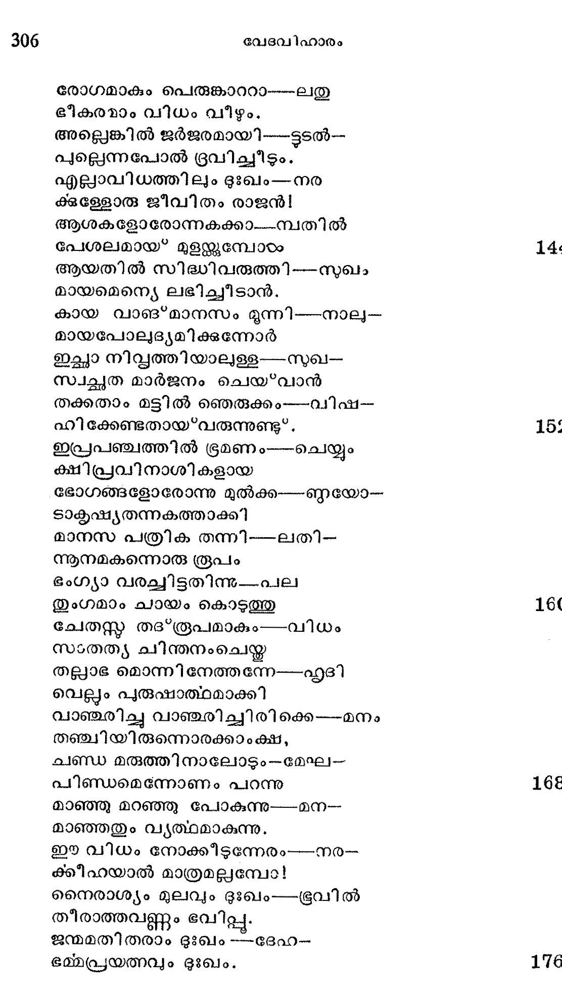
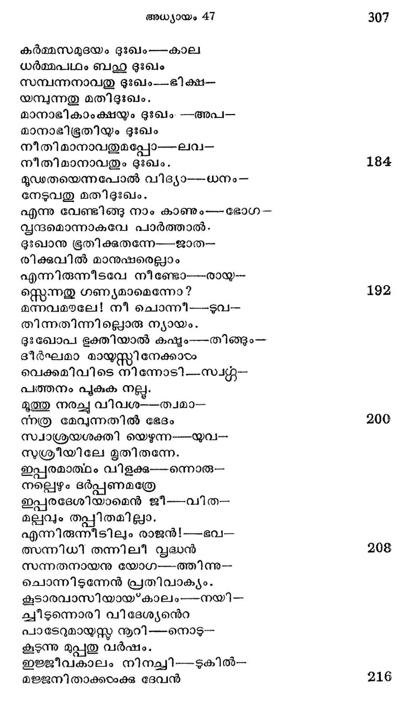
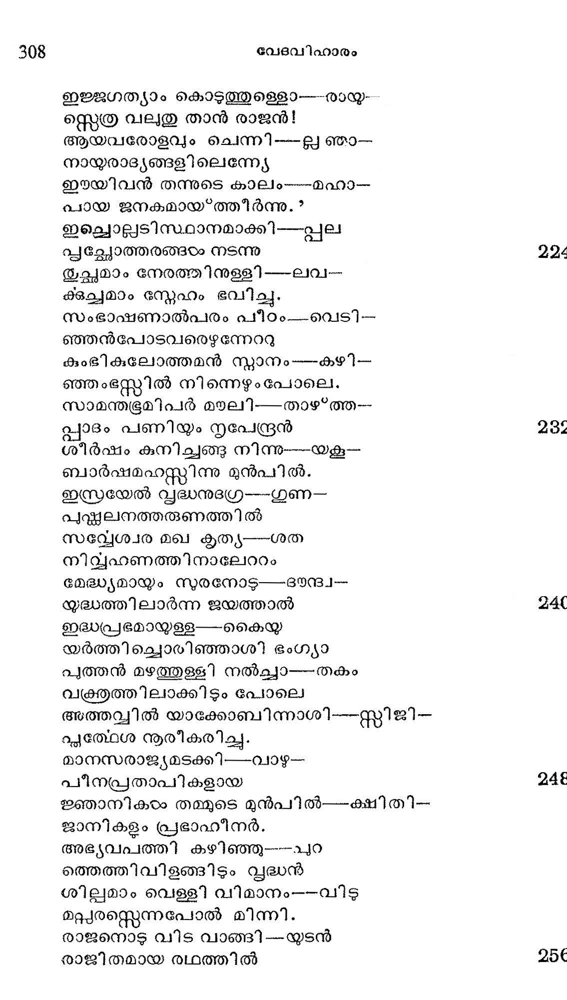

യാക്കോബും മക്കളം രാജധാനിയില്
തുന്പിതുരാനനം കണ്ട ---വാത്ത-
വന് പ്രമോദത്തൊടു യുസ്പന്
തമ്പരാന് തന്െറ സവിധം ---കന്നി-
ലിന്പമാം മട്ടിലുരച്ചു.
ഭ്രപനിതു കേട്ടനേരം---മന്ത്ര-
രൂപവിധികംം ഗ്രഹിച്ച
യൂഷഭന്മേല് താനൊഴുക്കും----നസുപൈ-
യൂഷമാം പ്രേമപ്രവാഹം
തജ*ജ്ഞാതി സംഘത്തിന് നേര്ക്കും----പാഞ്ഞു-
മജ്ജിച്ചവരെയും ഗാഡം
ആശ്ചര്യമല്ലിതു പാര്ത്താൽ----സ്രേഹ-
പാത്രത്തിലെന്നപോല് പ്രേമം
സംസക്തഭാജനവ്വന്ദ----ത്തിലും-
വന്ശക്തിയാര്ന്നൊഴുകുന്നു
പ്രേമാസ്പദത്തിനന്െറ നിസ്റ്റാ---രമാം-
സാമാനജാതങ്ങളെന്ന്യേ
ഗാര്ഹിക ജന്തുക്കംപോലു൦----പ്രിയ-
താര്ഹമായ്*ത്തിരുന്നു ചിത്രം!
ഇഷ്ടജനം നടന്നുള്ള ----വെറും-
കാട്ടവഴിയിലെ മണ്ണും
തചിട്ടെഴുന്നുള്ള കനക--പ്പൊടി-
ക്കൂട്ടമാന്ക്കാണുന്നു പ്രേമം.
ആയവര് വിശ്രമിച്ചുള്ള ---ജര-
ത്താകും തണല് മരക്കൂട്ടം
ഈഹിതം നല്കുന്ന കല്ല---രമ-
വൃയൂഹമാജ്കകാണുന്നു പ്രേമം.
ഇങ്ങിനെയെങ്കില് ഫറവോ--ന്നുത- -
ന്നിംഗിതവേദിയാം യൂസ്പന്
തയ്മേലിരിക്കും പ്രിയത---മൂലം
സന്മതി യാക്കോബിനെയും
തല്സുതന്മാരെയും സ്നേഹി --ച്വതി-
ലത്ഭുതം തോന്നുവാനില്ല.
രാജാവു യൂസ്പനോടോതി ---ഭവ-
ത്താതനും സോദരന്മാരും
മദദര്ശനാത്ഥമിപ്പുരില്--നിന്നു
പ്രത്യാഗമിക്കട്ടെ ശീഘ്രം.
ധന്ൃതയമ്പുമവരെ---ക്കാഞ്മാന്-
കണ്ണ കൊരിക്കുന്നു പാരം.
ഇത്ഥമരചന് വചിച്ച---വച'-
സ്്ത്യാദരം കേട്ട യൂസ്്റന്
തോഷമനസ്സോടും താതാ---.ദിയെ-
ഗോഷനില് നിന്നു വരുത്തി.
എല്ായിടത്തിലും കാന്തി--_ചൂട്--
സോല്പവാസമമ്പോ! പരത്തി,
സന്തതം മിന്നി. സംഖ്യ൦---ധിക--
പ്പൊന് താഴികക്കുടച്ചാര്ത്താല്
രാപ്പകല് നൂര്യനുദിച്ച---ഭംഗി--
നല്ലില് വഹിച്ചു നിന്നീടും
മിസ്രനഗരിയിലെത്ത്.---ടിനാ-
നിസ്രയേല് പത്രസമേതം.
അഞ്ചു സഹോദരന്മാരേ--യസ*പ--
നഞ്ചാവെ രാജസവിധം
പൂകിച്ചു പഞ്ചേന്ദ്രീയത്തേ-ട്ൈവ-൦
സേവള്കകരുളിയ പോലെ.
ഭാവൃകപ്രശ*നാദിതീര്ന്ന---ശേഷം
ഭൂപതി വീരനിച്ചോദ്യം

ചോദിച്ചു; ജോലിയെതന്താവോ?---നിങ്ങംം --
ക്കോതുവിനെന്നതുകേട്ട
ഞങ്ങഠം പരമ്പരയായി -_--മേഷ --
വൃന്ദസംരക്ഷകരത്രേ.
ക്ഷാമം ഭയന്നു കനാനി.-_-്നിവ-
രീമഞ്ജുവാകിയ നാട്ടില്
വന്നിരിക്കുന്നഭയാത്ഥി---കളാ--
യന്ൃൃശരണമില്ലാതെ
മന്നവ! നിന്െറ കടാക്ഷ --മിവ-
ക്കിന്നുളവായിടുമെങ്കില്
ഗോഷനാം ഗോപ്രചാരത്തില്--പാര്പ്പു--
തോഷിച്ചരുളണം രാജന്!
ഓതിനാരീവിധം ഭ്രാതാ-_-ക്കള
ബ*ഭൂപതി തന്നുടെ മുമ്പില്
ഈ വാക്കിനുത്തരമോത്ി---മന്നന്
യോസേപ്പലേ! മിസ്രയി ദേശം
വിസ്മീര്ണ്ണമായിക്കിടക്ക---ന്നതി
ലെസ്ഥലം നനെന്നു കാൺമൂ
അസ്ഥലമംഗീകരിക്കാ---മവ
ക്കത്തലകുന്നതില് പാക്കാം.,
കമ്മകയശല്യമുണ്ടെങ്കില്---ചിലര്--
മന്മൂഗപാലകരാവാം.
ഉദ്യോഗകാംക്ഷയെന്നുള്ള__-തേതു--
വിദ്വാനും സംഭാവ്യമല്ലോ.
മന്നന് പറഞ്ഞു കഴിഞ്ഞ---പൊഴു
തുന്നത ഭക്തനായുള്ള
മാന്യന് യകബനേയ്സ*പന്---രാജ--
സന്നിധ കൊണ്ടു നിറുത്തി
വന്ദ്യവയോധികന് തനന്െറ-_-ബഹ--
മാന്യമായ്യള്ളൊരു രൂപം
കണ്ടനിമിഷത്തില് രാജ-_-ന്നക --
ആണ്ടില് ബല്ഥമതി തോന്നി
സ്വസ്മിക്കു മുന്തന്നെയാക്കോ-- ബിന്നു--
ശസ്ദമായ്മള്ളൊരു പീഠം
നിസ്ത്രപ മേകിനാന് സിംഹാ --സനേ--
സംസ്ഥിതി ചെയ്യോരു ഭൂപന്
പീഠമവന്നു കൊടുത്തശേഷം --
നാടിന്നധീശനിരുന്നു
പ്രെൌഡവനന്കരിലത്യാ-- ദരം
കൂടുംമഹത്തുകരാക്കെല്ലാം

ശുഭശിരോരുഹഗ്ൃശ്ര---വാകും--
യാക്കോബു മപ്പറവോനും
ആരോഹണം ചെയ്തിരുന്ന----മഹാ--
കാരമാം പീടങ്ങടം രണ്ടും
പുണ്യഫലസ്ഥാന ഭൂവിന്---വട-
കന്റൊദ്ദശ ഭംഗിചിന്തി
രാജിക്കു മാന്റിലബണാ---ദ്രിയില്--
ഭ്രാജിക്കും ശൃംഗങ്ങളാകും 10.
ഹെമ്മണും നിബോയും പോലെ---ദഭൃശി--
ശര്മ്മദമായി വിളങ്ങി
ഏതാന്ക്ഷണം നിലനിന്ന----മയന--
ഭാവമാം ഗയരവമുദ്ദ
ഭഞ്ജിച്ചു സ്ൃദ്ധനോടേവം
മഞ്ജുവാം വാക്കിലുരച്ചാന്
ലോകേശ്വരന് തന്െറ യാശി-- സ്റ്റങ്ങേ--
ക്കേറെയുണ്ടാകയാലല്ലോ 11
ദ്രാഘീയസ്റ്റായൊരീയായ---സ്റ്റിനാല്--
ശലാഘിതനായതു പാര്ത്താല്.
ഭാവല്ക്കമായ ജനനം----കൊണ്ടു--
ഭൂവിനെപ്പാവനമാക്കി
എത്ര വര്ഷങ്ങളായി പ്പോ---ളെന്ന--
ങ്ങുക്തി ചെയ*വാന് കൊതിക്കുന്നേന്.
യാക്കോബുരച്ചു: നെടുതാ---മായ്യ-
സ്റ്റേറം കുറുതെന്നപോലെ 12
ശരാഘ്യമായ* തോന്നുവാനില്ല---.അതു--
ഭുഃഖാഭിഭൂരതമാണോര്ക്കില്.
ജാതമാകും സമയത്തേ---ക്രന്ദം --
ഭീതിദമാം മൃതിയോളം
ബാധിച്ചിടുന്നു മനുഷ്യാ---യസ്സി-
ഞ്ടാതുരമാക്കിടും മട്ടിൽ
ആഹാരം നേടുവാന് തന്നേ---നര
നൂഹാതിഗമായ ദുഃഖം 143
രാപകലങ്ങു സഹിച്ചീ----ടന്നു--
“ശാപ പരിഗ്രസ്മര്പോലെ.
അമ്മ തന് പാലും കുടിച്ചീ ----ഭുവാ-
നമ്പോ! ശിശുവിനുംകൂടി
തന്വാപിളര്ന്നു കരഞ്ഞു ----ഴുക
ധമ്മമാസ്തക്ാണുന്നു ഭൂവില്.
ദേഫസംരക്ഷണം ചെയ*വാന്----പര-
മീഹയോടുദ്യമിച്ചാലും 18

രോഗമാകും പെരുങ്കാററാ---ലതു
ഭീര്കരരാം വിധം വീഴും.
അല്ലെങ്കില് ജര്ജരമായി---ട്ടടല്--
പുല്ലന്നപോല് ദ്രവിച്ചീടും.
എല്ാാവിധത്തിലും ദുഃഖം---നര
ക്ള്ളോരു ജീവിതം രാജന്!
ആശകളോരോന്നകക്കാ.--്വതില്
പേശലമായ'* മുളന്്കുമ്പോടം
ആയതില് സിദ്ധിവരുത്തി---സുഖം
മായമെന്യെ ലഭിച്ചീടാന്.
കായ വാങ*മാനസം മുന്നി---നാല--
മായപോല)ദ്ൃയമിക്കുന്നോര്
ഇല്ലാ നിഡ്വത്തിയാലള്ള---സഖ-
സ്വച്ഛത മാര്ജനം ചെയ*വാന്
തക്കതാം മട്ടിൽ ഞെരുക്കം----വിഷ--
ഹിക്കേണ്ടതായ?വരുന്നുണ്ടു".
ഇപ്രപഞ്ചത്തില് ഭ്രമണം----ചെയ്യും
ക്ഷിപ്രവിനാശികളായ
ഭോഗങ്ങളോരോന്നു മുല്ക്ക----ണയോ-
ടാകടഷ്യതന്നകത്താക്കി
മാനസ പത്രിക തന്നി----ലതി-
നനൂനമകന്നൊരു രൂപം
ഭംഗ്യാ വരച്ചിട്ടതിന്നു---പല
തുംഗമാം ചായം കൊടുത്തു
ചേതസ്ത തദ*രൂപമാകും
സംതത്യ ചിന്തനംചെയ്ത
തല്ലാഭ മൊന്നി നേത്തന്നേ--ഹൃദി
വെല്ലം പുരുഷാത്ഥമാക്കി
വാഞ്ജരിച്ചു വാഞ്ചരിച്ചിരി ക്കെ --മനം
തഞ്ചിയിരുന്നൊരക്കാംക്ഷ,
കണ്ഡ മരുത്തിനാലോടും--മേഘ-
പിണ്ഡമെന്നോണം പറന്നു
മാഞ്ഞു മറഞ്ഞു പോകുന്നു----മന--
മാഞ്ഞതും വ്ൃത്ഥമാകുന്നു.
ഈ വിധം നോക്കിടുന്നേരം
ക്കീഹയാല് മാത്രമല്ലമ്പോ!
നൈരാശ്യം മുലവും ഭുഃഖം----ഭൂവില്
തീരാത്തവണ്ണം ഭവില്ലൂ.
ജന്മമതി തരാം ദുഃഖം ---ദേഹ-
ഭമ്മപ്രയത്നവും ദുഃഖം.

കര്മ്മസമുദയം ദുഃഖം ----കാല
ധര്മ്മപഥം ബഹ ദുഃഖം
സമ്പന്നനാവതു ദുഃഖം---ഭി ക്ഷ-
യമ്പുന്നതു മതിദുഃഖം.
മാനാഭികാംക്ഷയും ദുഃഖം. -അപ/-
മാനാഭിഭരതിയും ദുഃഖം
നീതിമാനാവതുമപ്പോ
നീതിമാനാവതും ദുഃഖം.
മുഡതയെന്നപോല് വിദ്യാ---ധനം-
നേടുവതു മതിടദുടഖം.,
എന്നു വേണ്ടിങ്ങു നാം കാണും൦---ഭോഗ-
വൃന്ദമൊന്നാകവേ പാര്ത്താല്.
ദുഃഖാനു ഭൂതിക്കുതന്നേ--ജാത--
രിക്ഷകവില് മാനുഷരെല്ലാം
എന്നിരുന്നീടവേ നീണ്ടോ----രായ്യ--
സ്റ്റെന്നതു ഗണ്യമാമെന്നോ?
മന്നവമയലേ! നീ ചൊന്നി----ഴ൮-
തിന്നതിന്നില്ലൊരു ന്യായം.
ദുഃ$ഖോപ ഭക്തിയാല് കഷ്ം---തിങ്ങും--
ദീര്ഘമാ മായ്യസ്ത്റി നേക്കാരം
വെക്കമിവിടെ നിന്നോടി---സ്വ്റ-
പത്തനം പുകുക നല്ലൂ.
മൂത്തു നരച്ചു വിവശ---തവമാ--
ന്നത്ര മേവുന്നതില് ഭേദം
സ്വാശ്രയശക്തി യെഴുന്ന
സശ്രീയിലേ മൃതിതന്നേ.
ഇപ്പരമാത്ഥം വിളക്ക---ന്നൊരു--
നല്ലെഴും ദര്പ്പണമത്രേ
ഇപ്പരദേശിയാമെന് ജീ--വിത-
മല്പവും തപ്പിതമില്ലാ.
എന്നിരുന്നീടിലും രാജന് !---ഭവ--
അന്നിധി തന്നിലീ പ്ൃദ്ധന്
സന്നതനായനു യോഗ----ത്തിന്നു--
ചൊന്നിടുന്നേന് പ്രതിവാക്യം.
കൂടാരവാസിയായകാലം----നയി-
ചുടുന്നൊരി വിദേശ്യന്െറ
പാടേറുമായുസ് നൂറി---നൊട്-
കൂടുന്നു മുപ്പതു വര്ഷം.
ഇജ്ജീവകാലം നിീിനച്ചി---ടുകില്--
മജ്ജനിതാക്കടംക്കു ദേവന്

ഇജ്ജഗത്യാം കൊടുത്തുള്ളൊ----രായ്യ-
സ്ററെത്ര വലതു താന് രാജന്!
ആയവരോളവും ചെന്നി----ല് ഞാ-
നായ്ുരാദ്യങ്ങളിലെന്ന്യേ
ഈയിവന് തന്നുടെ കാലം
പായ ജനകമായ*ത്തീര്ന്നു.?
ഇല്ലൊല്പടിസ്ഥാനമാക്കി---പ്പല
പ്പച്ഛോത്തരങ്ങഠം നടന്നു
തുച്ഛമാം നേരത്തിനുള്ളി--ലവ:-
ക്കച്ചമാം സ്നേഹം ഭവിച്ചു.
സംഭാഷണാല്പരം പീഠം-_--വെടി--
ഞ്ഞന്പോടവരെഴന്നേററു
കുംഭികുലോത്തമന് ന്യാനം---കഴി--
ഞ്ഞംഭസ്തില് നിന്നെഴുംപോലെ.
സാമന്തഭരഭൂമിപര് മയലി---താഴ*ത്ത--
പ്ലാദം പണിയും നൃപ്ന്ദ്രന്
ശീര്ഷം കുനിച്ചങ്ങു നിന്നു--യകൂ--
ബാര്ഷമഹസ്സിന്നു മുന്പില്.
ഇസ്രയേല് വ്ൃദ്ധനുദഗ്ര---ഗുണ--
പുഷ്തലനത്തരുണത്തില്
സവ്വേശ്വര മഖ കൃത്യ--ശത
നിവ്യഹണത്തിനാലേററം
മേദ്ധ്യമായ്യം സുരനോട്---ദയന്ദവ--
യുദ്ധത്തിലാര്ന്ന ജയത്താല്
ഇദ്ധപ്രഭമായളള----കൈയയ
യര്ത്തിച്ചൊരിഞ്ഞാശി ഭംഗ്യാ
പുത്തന് മഴത്തുള്ളി നല്ച്ചാ----തകം
വക്രതത്തിലാക്കിടും പോലെ
അത്തവ്വില് യാക്കോബിന്നാശി--സ്റ്റീജി-൦
പ്ൃത്ഥേശ നൂരീകരിച്ച.
മാനസരാജ്യമടക്കി---വാഴ-
പീനപ്രതാപികളായ
ജ്ഞാനികടം തമ്മുടെ മുന്പി ല്---ക്ഷിതി-
ജാനികളും പ്രഭാഹീനര്.
അഭൃൃവപത്തി കഴിഞ്ഞു---ചുറ
ത്തെത്തിവിളങ്ങിടും സൃദ്ധന്
ശിലമാം വെള്ളി വിമാനം---വിടു
മറ്പരസ്റെന്നപോല് മിന്നി.
രാജനൊട വിട വാങ്ങി ---യുടന്
രാജിതമായ രഥത്തില്

സ്വീ യതനയ സമേതം --റമ--
സേസിന്നു യാകുബന് പോയി.
ക്ഷാമം കഠിനമായ്* ത്തീര്ന്നു -- ജന-
സ്നോമത്തിന്നുള്ള പണങ്ങടം
ധാന്യവിലയായ* ന൬പനന്െറ --ഭീമ--
ഭണ്ഡാരം പൂകി ക്ഷണത്തില്.
ദ്രവ്യാനുയാനം തുടങ്ങി--- പിന്നെ
ഗോമേഷ: സ്കന്ഭാദിയെല്ലാം 264
എങ്കില്ം ക്ഷാമമാം വഹ്നി --പരം--
ഹുങ്കൊട കാളകയായി.
ഉഗ്രതരമാമി ക്ഷാമ--പ്പിശാ-
ചഗ്രേ നിന്നാടി ക്കളിന്റെ
വൃഗ്രിചു ലോകരശേഷം--- സ്ലബ്
വിഗ്രഹരായ* നിലകൊണ്ടു
ഭൂരസവത്തു ദേഹമിവകാം -- ൬൨
കോശമാം വേടിയിലാക്കി 272
ക്ഷാമ ഭൂതത്തിനു തൃപ്തി---യെഴും
ഹോമം കഴിച്ചാര് മനുഷ്യര്.
ഈവിധം മിസ്രരയിം നാടും
വ്യൂഹവും രാജസ്വമാവാന്
മാര്ഗ്ഗമായ വന്നിതു ക്ഷാമാ---ക്രമം
യാക്കോബ്? സുതനന്െറ നയവും-
ദുര്ഭിക്ഷവാതമടങ്ങി -----ജഗ--
ദബടധിയില് ജീവിതക്കപ്പല് 280
നിര്ഭയം വ്ക്കുവാന് തക്ക---നില-
യുല്ലന്നമാകും വരജ്ക്കും
അപ്പനും സോദഭരന്മാര്ക്കം---ബഹു-
തൃപ്തിയാം മട്ടിലശനം
കെല്ലൊടരുളിനാന് ചൊല്ലൊ---ഞ്ദിന-
സല്പുരുഷനായ യൂസ്പന്.